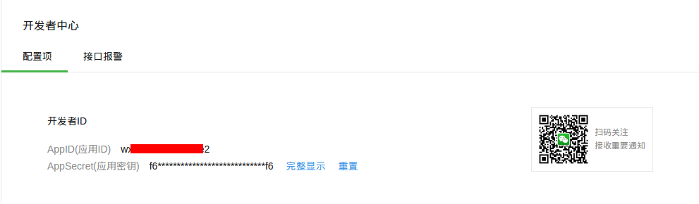
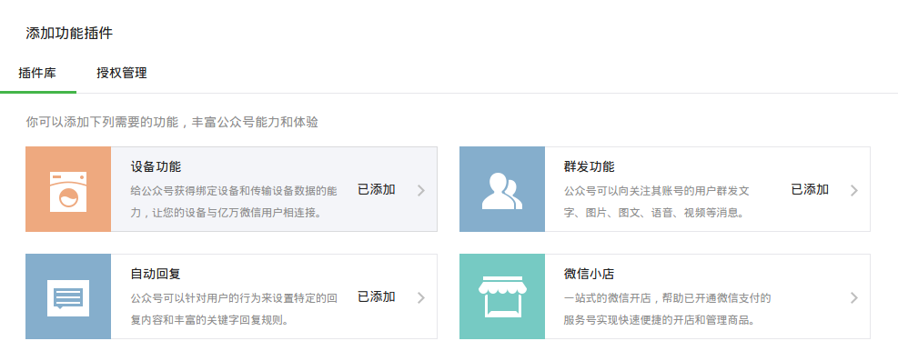

第三方对接指导
微信
1. 简介
AbleCloud实现了和微信的云端对接——支持用户同步、设备绑定关系同步、设备状态同步，及设备远程控制等功能——开启了微信硬件开发的全新模式。 在该模式下，结合AbleCloud提供的API，厂商可以在自己微信公众号里用HTML5页面实现和原生APP几乎一样的智能硬件相关功能特性，并且能够保证足够的安全性。 普通用户只需要用微信扫描设备二维码，就能实现对设备的绑定，从而实现对设备的控制。
在AbleCloud与微信对接的合作模式中，双方共同维护用户信息、设备信息，以及用户与设备的绑定关系。 AbleCloud则提供了维护WIFI设备的工作状态、与WIFI设备远程通信、分组管理WIFI及蓝牙设备、管理网关设备、管理并实施设备OTA等与设备管理直接相关的功能。 对于蓝牙设备，则由微信客户端负责与设备的具体通信。
为帮助厂商开发支持硬件功能的微信公众号，AbleCloud提供了PHP及Java语言的SDK。厂商的微信公众号主要通过HTML5页面及公众号菜单等界面向用户提供交互功能。
2. 开发前准备工作
(1) 申请微信公众号
微信公众号是属于各个厂商，因此，申请公众号这个步骤由厂商完成。申请好后，会得到微信公众平台分配的appID和appsecret。如下图所示：  微信公众号需要为服务号，并开启设备功能，如下图： 
微信公众号申请地址：https://mp.weixin.qq.com/
开发、测试阶段，厂商也可申请微信公众平台接口测试帐号：http://mp.weixin.qq.com/debug/cgi-bin/sandbox?t=sandbox/login。 测试号需要开发者手工开启设备功能。
(2) 准备服务器
当前，AbleCloud不提供主机代理服务，因此需要厂商准备机器，配置外网ip，并且申请一个域名。微信公众号正式上线时需要设置域名，并且使用服务器的80端口提供服务。
此外，还需按照微信公众号的要求配置好js接口安全域名，网页授权获取用户基本信息的授权回调页域名等配置项。
(3) 设备授权及二维码
在销售或使用设备之前需要在微信硬件平台完成设备授权（请参考微信硬件平台-设备授权），也需要在AbleCloud平台完成设备入库。

上述参数中，需要注意的几项包括：
-
id
设备的物理ID。AbleCloud要求设备的物理ID为16个字符。
-
auth_key, crypt_method, auth_ver
用于指定设备与微信客户端或微信平台通信时采用的认证及数据加密方法。 对于通过AbleCloud平台与微信对接的设备（蓝牙设备除外），其身份认证与数据通信过程均由AbleCloud平台负责实施，采用AbleCloud平台的通信保密协议（已经集成在AbleCloud平台的WIFI固件中）。 因此，如无特殊需求，上述三个参数可分别取值为""，"0"及"0"，表示不加密。
其它参数请根据实际情况配置。
为方便用户绑定、使用设备，厂商需要为设备创建二维码。微信硬件平台提供了两种创建设备二维码的方法。 为了满足设备物理ID的长度为16个字符的要求，开发者应使用微信硬件平台-获取设备二维码提供的接口创建二维码。
(4) 配置微信公众号菜单
创建微信公众号菜单可参考微信官方文档。